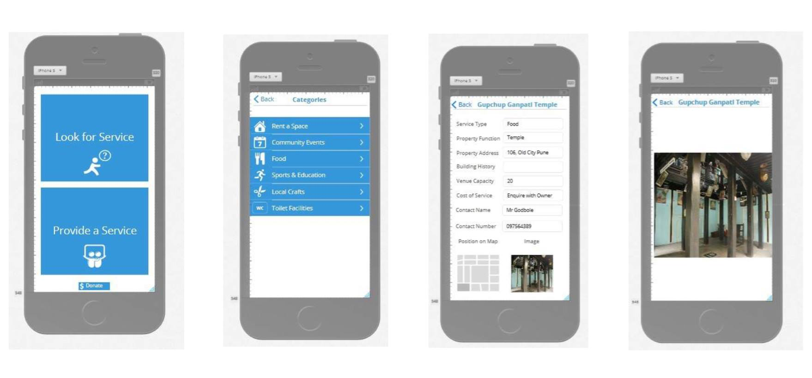

About me
{kind=link}
A Few words about me
I am passionate about working with people with different skillsets to develop new concepts and products that costumers will love.
I am fascinated by what is yet to come into existence in terms of technologies implementation and innovation and particularly interested in artificail intelligence.
Experienced in
Interested in
Skillset
GIS & Design
ArcGIS/QGIS
Adobe Photoshop & Adobe Illustrator
InVision
Data Analysis & Visualisation
Python
SQL
Javascript/HTML5/CSS
Languages
French
English
Spanish
Resume
Portfolio (Under Construction)
- All works
- Articles
- Data Analysis & Visualisation
- Hackhaton & Venture Lab
- Smart City & Technology
Amsterdam?
“A building is more than the sum of it’s functions; architecture has to facilitate human activity and promote social interaction” Aldo Van Eyck Amsterdam playgrounds opened a new wave of modernisation during the second part of the 20th century, in which places have been endowed with new functions. Representing the first places of leisure in the birth of a new society, the games broke the idea of work alienation and urban chaos of the industrial city. It brought a new and fresh urban climate for the community. By playing with restructuration of spaces without destroying places, Amsterdam is today an example in terms of urban innovation and participative governance. In re-inventing abandoned places or extending sidewalks, Ayeck showed us how public places can be re-used as functional platforms. They are never immutable but led to permanent creative deconstructions and reconstructions (Joseph Shumpeter, 1942). A city is made to live until its next transformation, following the waves of innovation of our urban society. Spaces are places of innovation, not designed to stay, but designed to be consumed until their death and reinvention. What matters is their utilisation. “Today, a rising population of architects and designers are working in under-resourced communities around the world, where their skill in envisioning transformation is essential.” (Katie Crepeau, 2014).

Will Detroit soon stand up?
Detroit is not dead, Detroit will never die, Detroit will survive but its collapse was so strong that the city will probably need time. The collaboration and alternative solutions of the city’s artistic, academic, activist and political communities, are powerful lessons for the rest of the world. Detroit has the local assets to make different decisions. But the city needs financial and technical support. Indeed the extreme racial divisions and the very high poverty rates are realities that need a radical shift in terms of thinking and practices. With its cultural and natural resources Detroit has the potential to, one day, become the new economic capital of the Great Lakes region. Throughout the existing literature, authors offers descriptions but no concrete proposals. A renewal needs time, and for now a new vision is needed by the people of Detroit for the people of Detroit. Is Detroit not the perfect location for entrepreneurs to develop new innovative and sustainable projects at low cost?
Pune
Hackathon Challenge : Community Capacity Building and Income Earning Opportunities in India
More infoHow to adapt the reuse of the built environment in central Pune?
For the local community which has great ideas and needs, Open Heritage is an application that allows community capacity building, and income-earning opportunities for private home owners and local handicrafts producers.
How to make a masterpiece accessible?
For children who are curious but quickly distracted, Prado for kids is an application which gathers education and fun, unlike audioguides and printed booklets, which target adults and outsiders, our app’ lets the kid learn by doing, while re-inventing the rules of the game and sharing it with his family.
How to make a bus shelter enjoyable?
For Londoners who are arriving and waiting at bus shelters, or just passing by, “What Now?” is a design tool which gathers real-time travel information, weather forecasts and local opportunities to discover London neighbourhoods actively. Our dynamic visualisation lets the user choose what to learn, where to go, and what to plan while mixing past, present and future local information.
Europe
Connecting European Cities By Water : Rivers Re-Integration For Sustainable Transportation and Cities Economic Growth
More infoThe Rise of the World Cities
Society and Governance Master in City Sciences Universidad Politecnica de Madrid 2015 From physical regeneration to communities integration, from global flagships to the necessity of driving reinvestments with individual and clear business plans, cities need new political agendas announcing what is incidental from what is inexorable (Meckstroth, 1975). Listing urban priorities in terms of space upgrading, population accessibility and infrastructural projects is getting essential. On a local scale, the participation of public and private actors in urban life is needed, the formation of mixed communities and new forms of collaborations are emerging everywhere from Cairo to Philadelphia. The renewal of planners through various domain of expertises can lead the way to improve lifestyles and increase liveable and rational urban environments. The utilisation of cutting-edge technologies and the collaboration with private companies can be oriented toward local growth and social interests. The place of economic and social developments in national and local policies are still relevant. The rise of world cities, with homogenised spatial patterns and economic behaviours, stresses the call for scholars and experts to develop and experiment new theories and local practices. Each city is different and despite the homogenisation of efficient traditional planning tools, cities will remain particular playgrounds of opportunities and innovations.